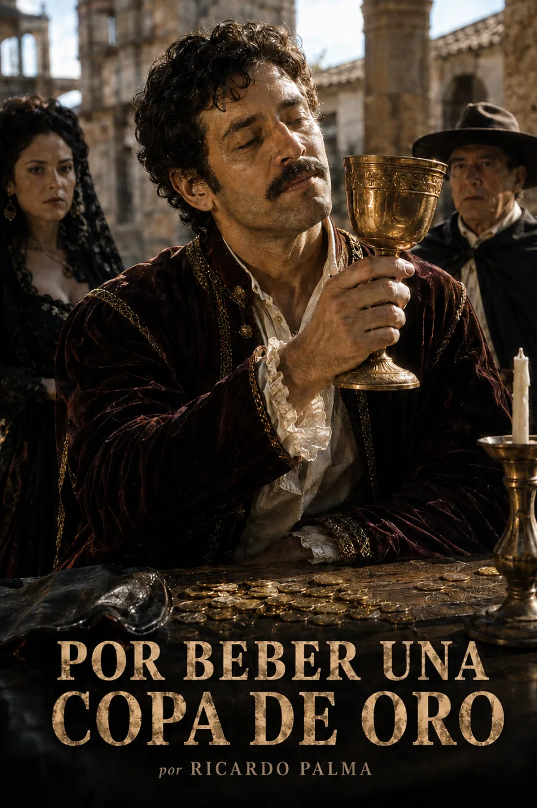

Oro, tributo y leyenda
Palma sitúa esta tradición en Tintay, en los Andes, en 1613. El regreso del cacique tras entregar los tributos al Cuzco enciende una protesta: las copas de oro de los antepasados se contraponen al barro del presente. La multitud irrumpe en los templos y toma los cálices; una maldición precede a la desaparición del agua.
La copa no es solo un lujo: concentra una disputa por la dignidad y por lo arrebatado.
El relato enlaza dominación colonial, violencia y castigo religioso. Conviene escuchar también la voz que lo cuenta: la explicación sobrenatural pertenece a la tradición literaria, no a una comprobación histórica de sus sucesos.
1613 corresponde al tiempo del relato, no a su publicación. El narrador mira hacia Tintay desde 1880. Texto de referencia: Tradiciones peruanas, de Ricardo Palma. La imagen de cabecera es una interpretación artística, no una reconstrucción documental.
La lectura
Por beber una copa de oro · Relato completo
Reseñas

Bueno